Juara 1 Film Dokumenter 2024
LARWASIPDA 2024, Lomba Pembuatan Film Dokumenter tingkat Kabupaten Cilacap.
0%
Halo, saya
Didik Pribadi
Saya |
✨ Stay Creative Be Unique
📍 Desa Rejodadi, Cimanggu, Cilacap, Jawa Tengah
Halo, saya Didik Pribadi, lebih dikenal sebagai Gewol. Usia saya 19 tahun, mahasiswa program studi Teknik Informatika di Universitas Komputama, berasal dari Desa Rejodadi, Kecamatan Cimanggu, Kabupaten Cilacap, Jawa Tengah. Saya seorang streamer dan kreator konten. Di sini kamu bisa menemukan semua tempat saya berkarya, mulai dari live streaming sampai konten harian. Yuk mampir dan ikuti!
Perangkat yang saya pakai untuk berkarya
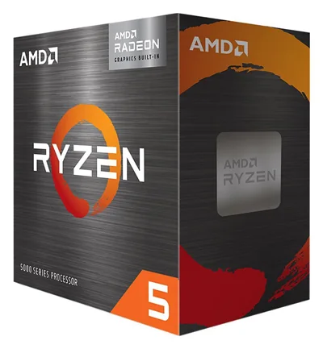
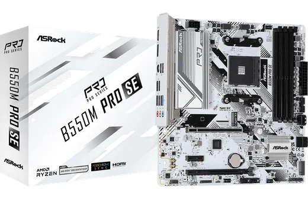
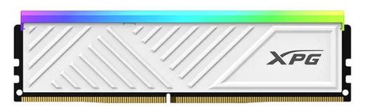
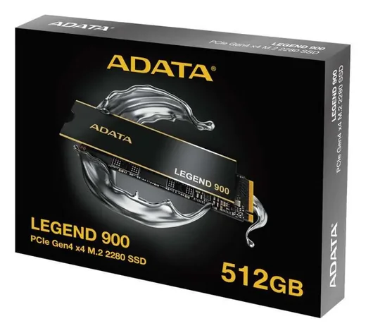
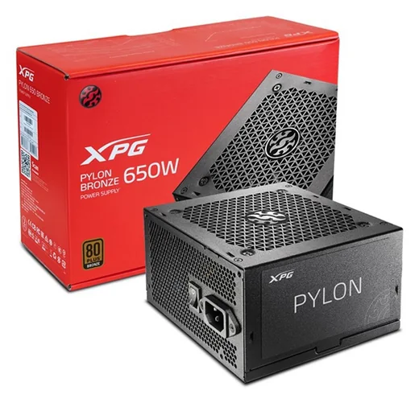
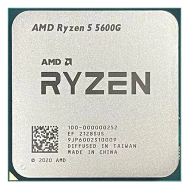
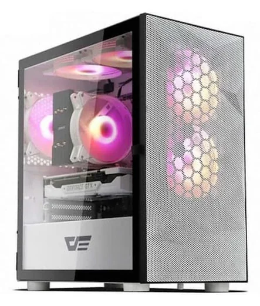
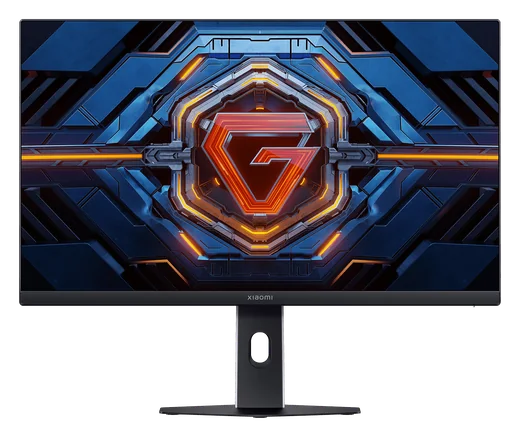
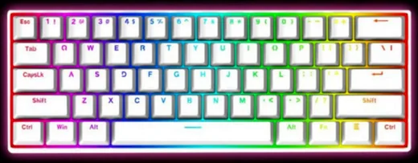
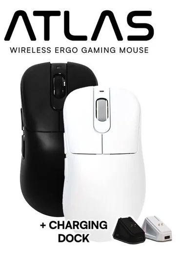
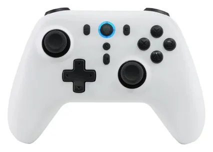
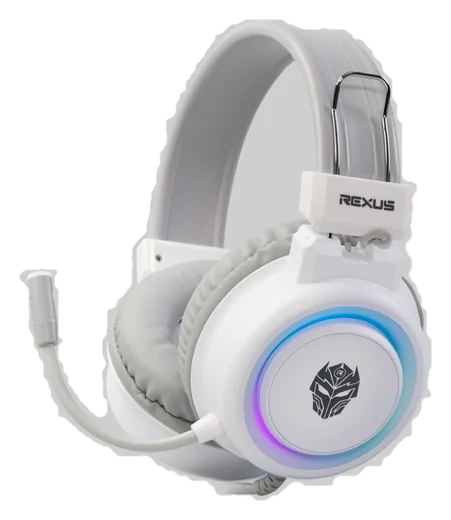
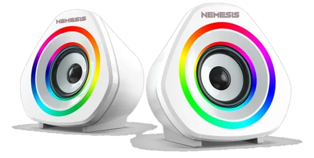
Tombol “Beli” bisa berupa tautan afiliasi: harga untukmu tetap sama, dan saya bisa mendapat komisi kecil yang mendukung channel ini.
Satu sesi setiap hari. Kalau berhalangan, kabar terbaru ada di media sosial.
13.00 – 15.00 WIB
Kecuali ada kesibukan.
Game yang paling sering muncul di live.
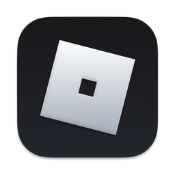
Punya game atau lagu yang ingin saya mainkan saat live? Tulis di sini, saya cek sebelum live berikutnya.
Momen berkesan dalam perjalanan saya. Klik foto untuk memperbesar.
LARWASIPDA 2024, Lomba Pembuatan Film Dokumenter tingkat Kabupaten Cilacap.
Lomba Pembuatan Film Dokumenter tingkat Kabupaten Cilacap 2025.
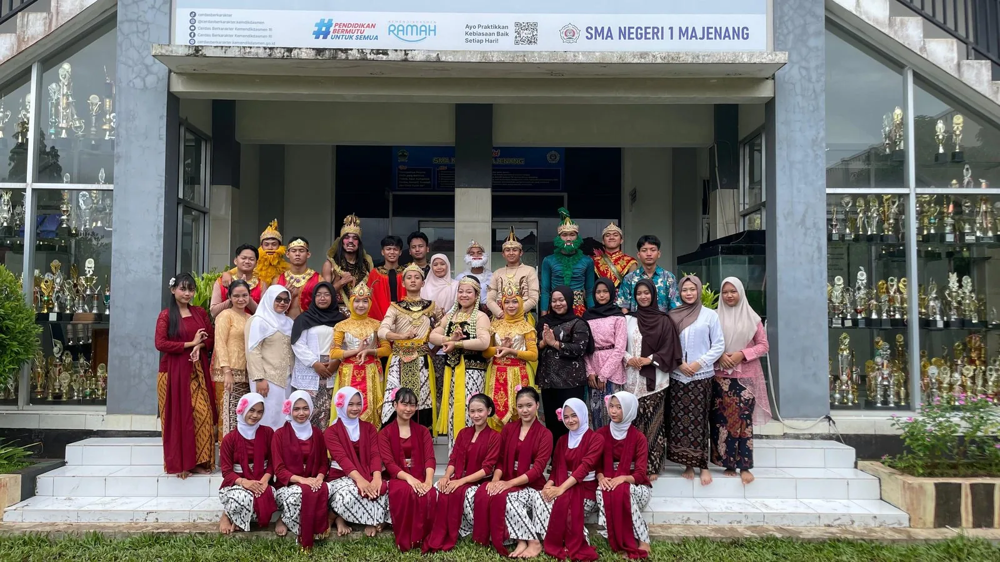
Kelas XII.F5 "SCIZOLASMA" berfoto bersama.
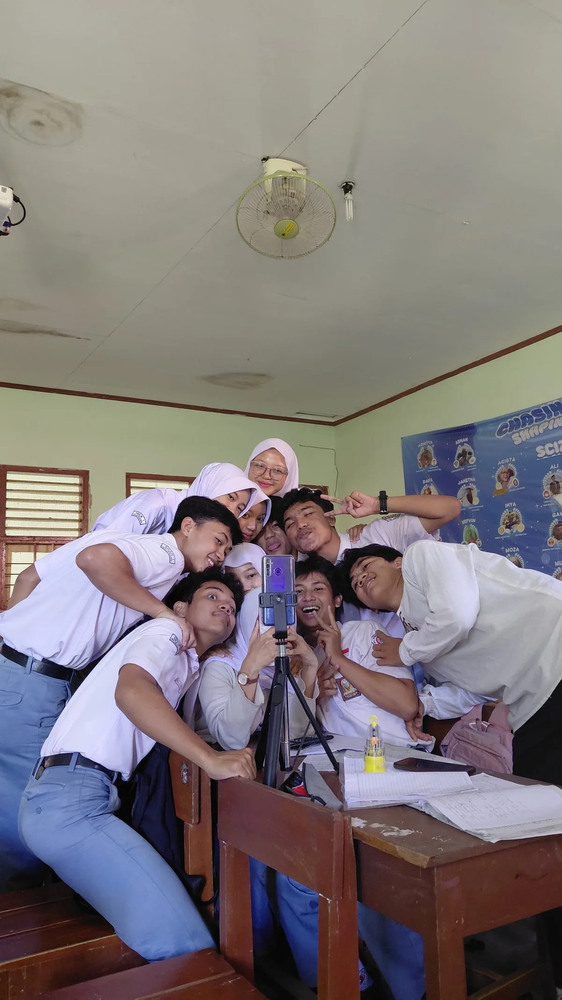
Momen live streaming ketika Ainayy mengirim gift Paus.
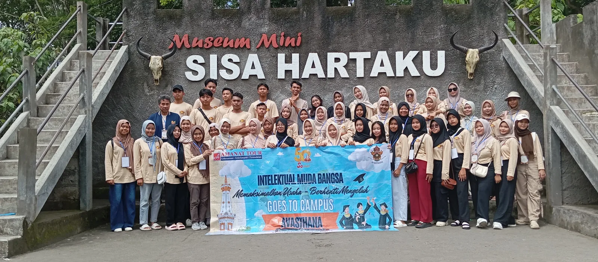
Kegiatan study campus "Goes to Campus" bersama rombongan, berfoto di Museum Mini Sisa Hartaku.
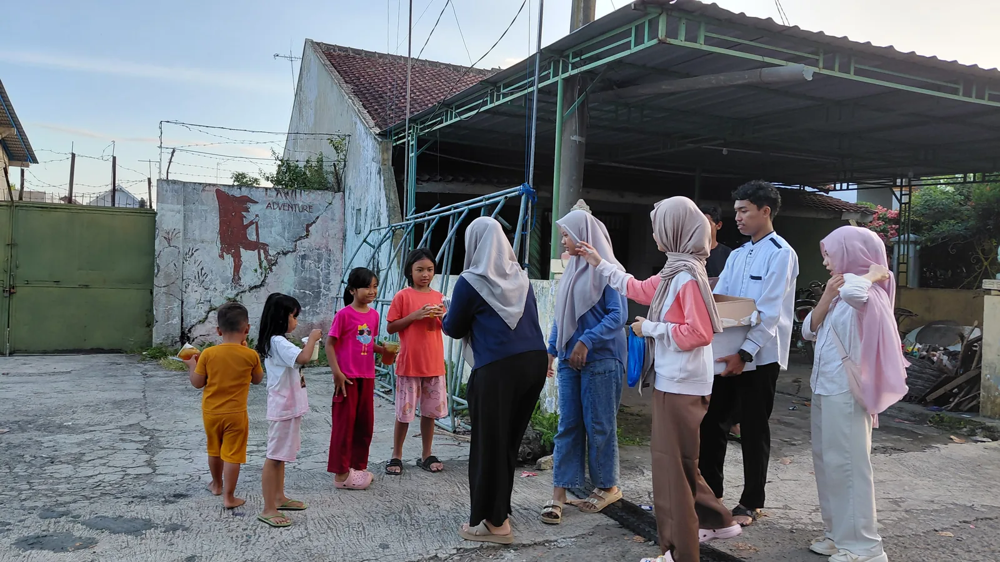
Berbagi takjil kepada anak-anak dan warga sekitar di bulan Ramadan 2026.
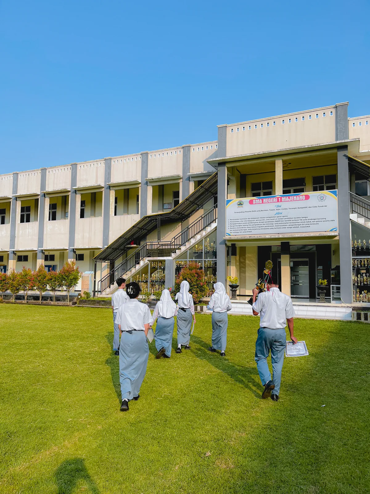
Tim film dokumenter 2024 kembali ke sekolah membawa piala dan piagam kemenangan.
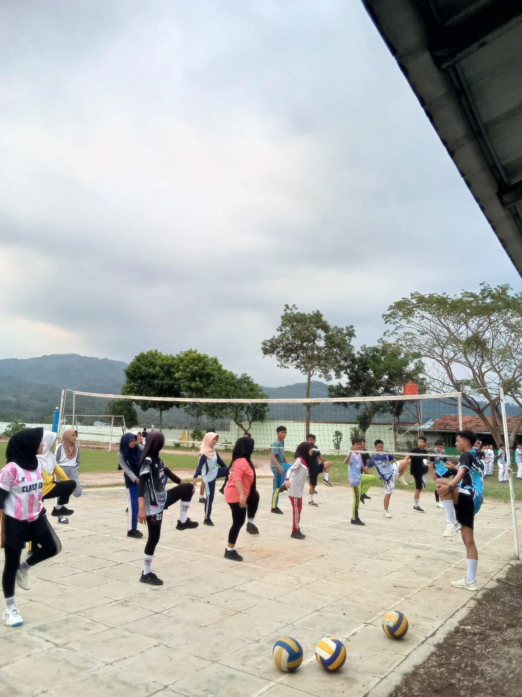
Kegiatan ekstrakurikuler voli: pemanasan bersama sebelum latihan di lapangan sekolah.
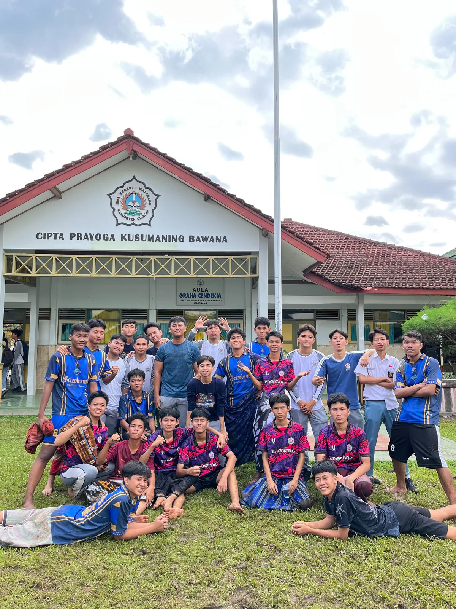
Foto bersama kelas XII.F-5 dan XII.F-6 SMAN 1 Majenang.
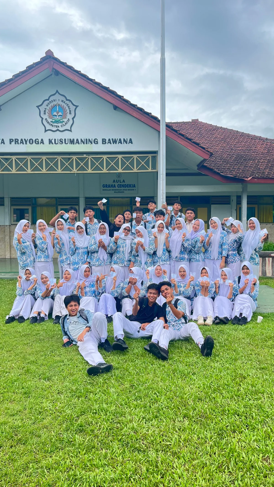
Berfoto bersama setelah menyelesaikan Tes Kemampuan Akademik (TKA) 2025.
Dua film dokumenter yang membawa saya ke podium. Klik untuk memutar.
Karya yang meraih Juara Harapan 1 tingkat Kabupaten Cilacap.
Buka di YouTubeVideo dan postingan terbaru dari YouTube dan TikTok.
Temukan saya di sini
Jawaban singkat untuk hal yang paling sering ditanyakan.
Setiap hari pukul 13.00–15.00 WIB, kecuali ada kesibukan. Kalau berhalangan, kabarnya ada di media sosial.
Lewat TikTok, YouTube, atau Kick (@gewolx). Tautan ketiganya ada di bagian Jadwal Live.
Isi formulir di bagian Request untuk Live. Saya cek sebelum live berikutnya.
Suka dengan kontennya? Dukunganmu membantu saya terus berkarya dan lebih sering live.
Terima kasih untuk para pendukung teratas yang bikin channel ini terus hidup.